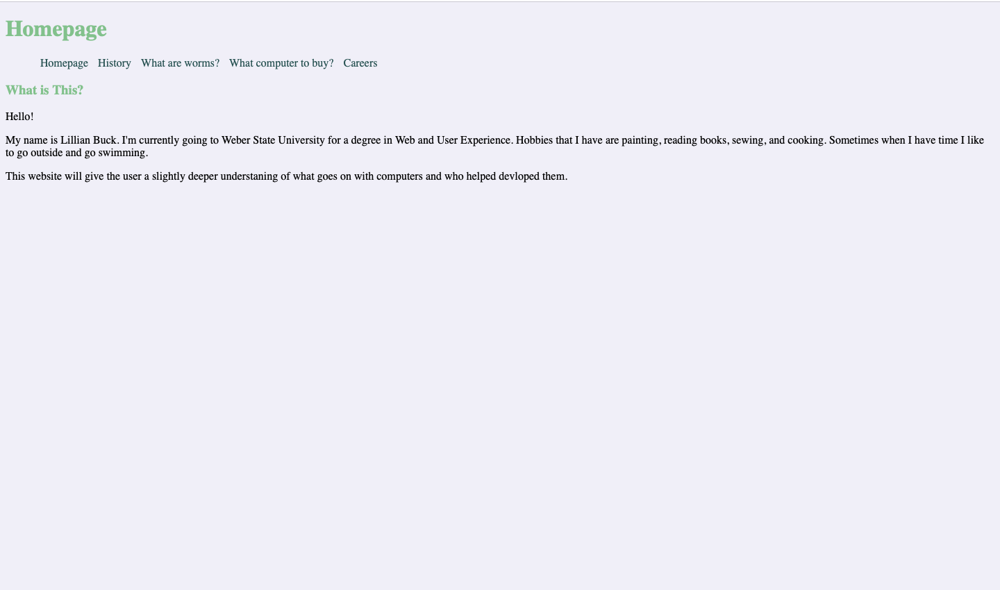

This project was my first attempt at building a multi-page website alone. The site highlights different career paths available with a degree in UX/UI and outlines the steps involved in coding a website from scratch. It was designed to showcase my ability to organize content across multiple pages while applying fundamental web development skills.
Challenges: One of the main challenges I faced with this project was building a multi-page website for the first time. I had to figure out how to structure and link multiple pages while keeping the content clear and easy to navigate. Another challenge was presenting information about UX/UI careers and the steps to code a website in a way that was organized and engaging. I also focused on maintaining consistent design and layout across all pages, which helped me improve my attention to detail and overall web development skills.
What I Learned This was my first multi-page website, and I learned how to structure and link pages, present information clearly, and maintain consistent design—skills that strengthened my web development abilities.